只要是學生身份可以申請「AutoDESK帳戶」，然後免費下載「學生版」，可以有三年即日起改為一年免費授權使用，到期後還可以展延！
讓你學習AutoCAD軟體取得不再是問題囉～
▼在校學生可下載AutoCAD學生版，官方三年官方一年免費授權使用：
http://www.autodesk.com/education/free-software/autocad


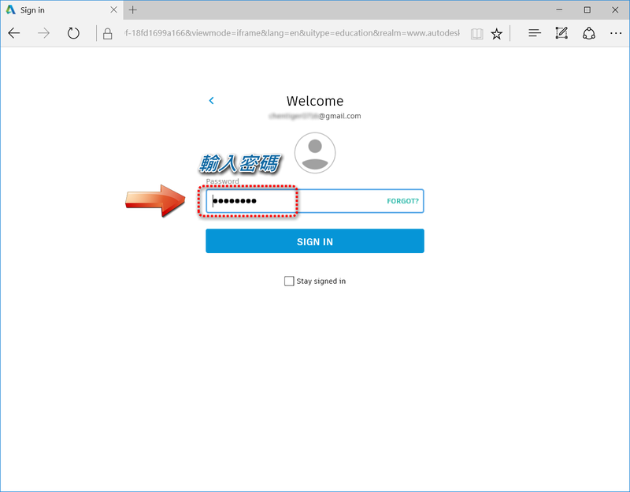

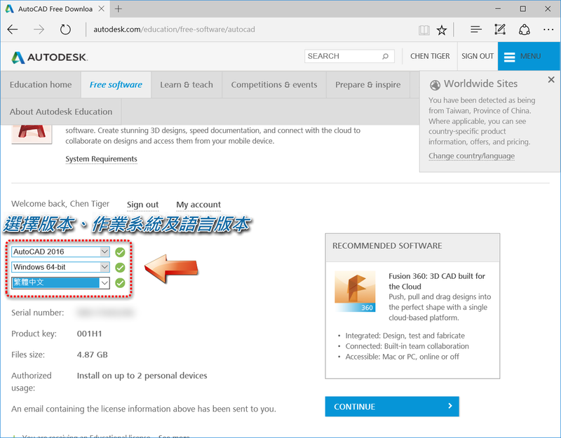
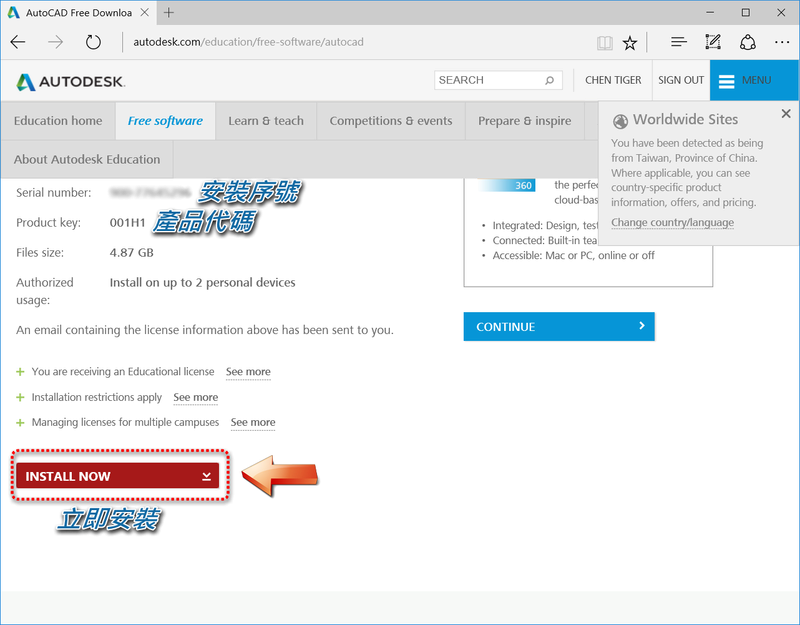
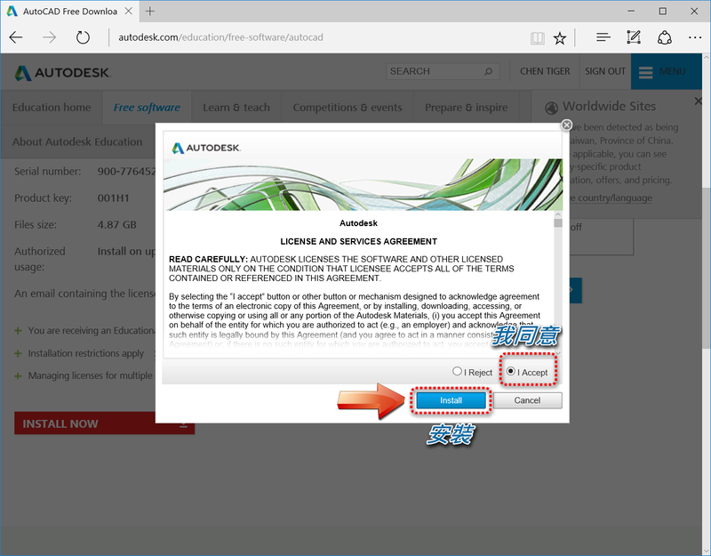
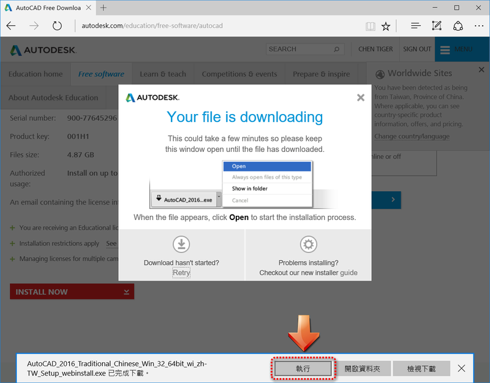
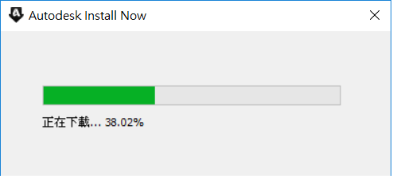

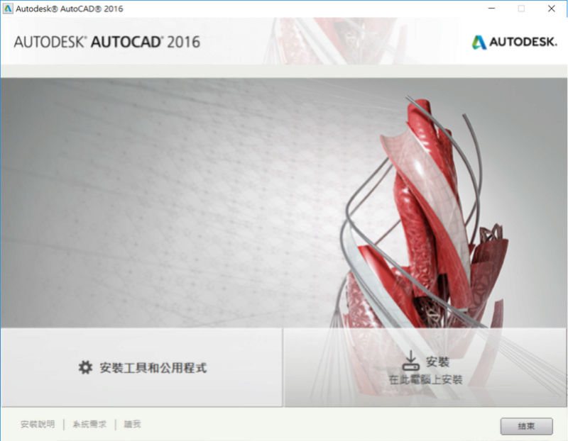
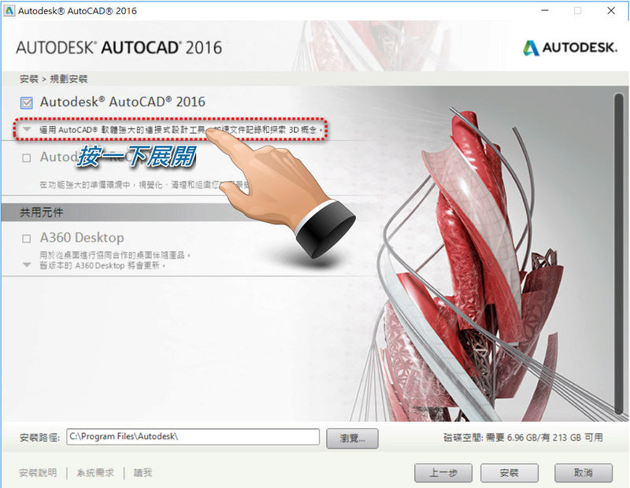

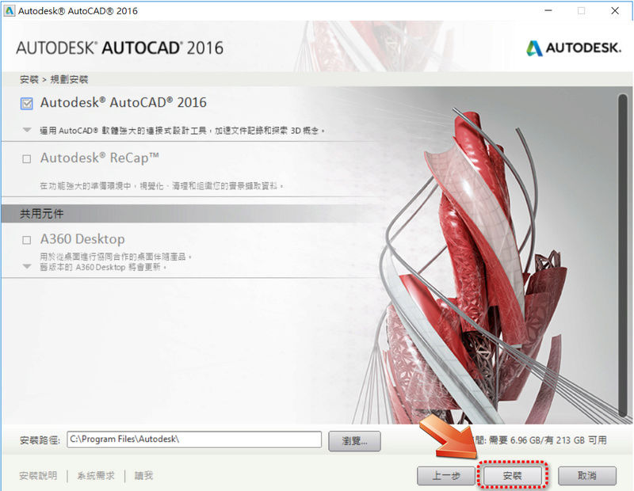
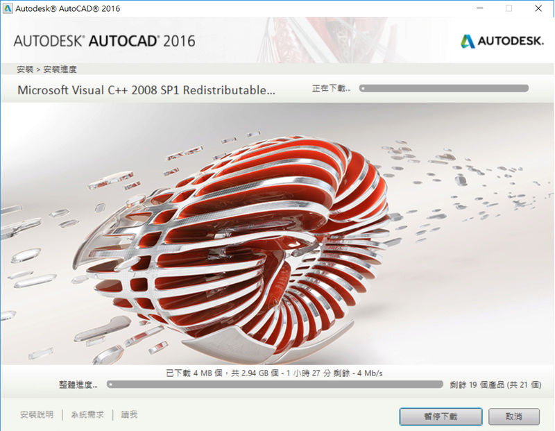


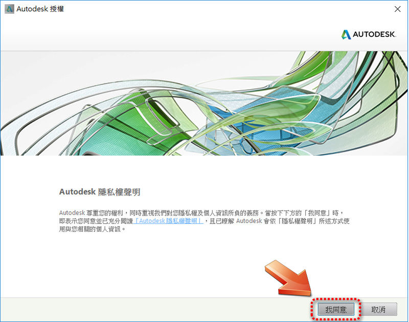
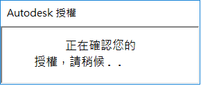
▼步驟21：日後開dwg圖檔若出現訊息，請選擇「AutoCAD」應用程式
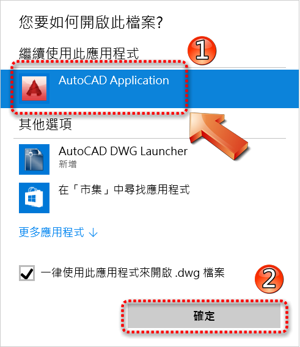